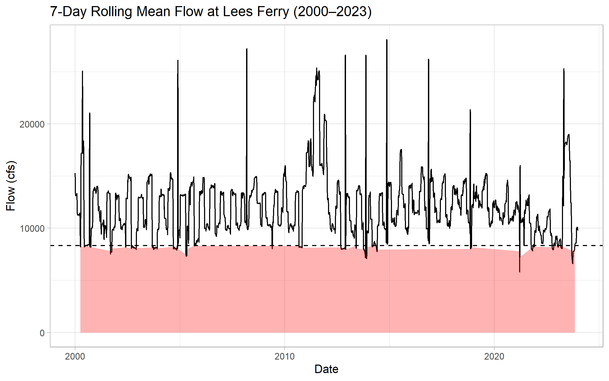
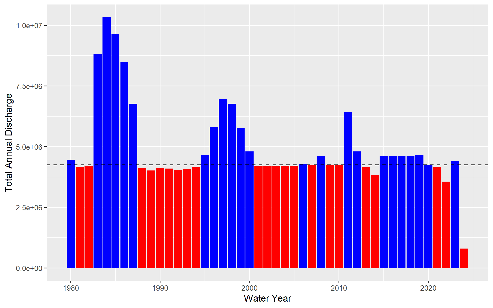
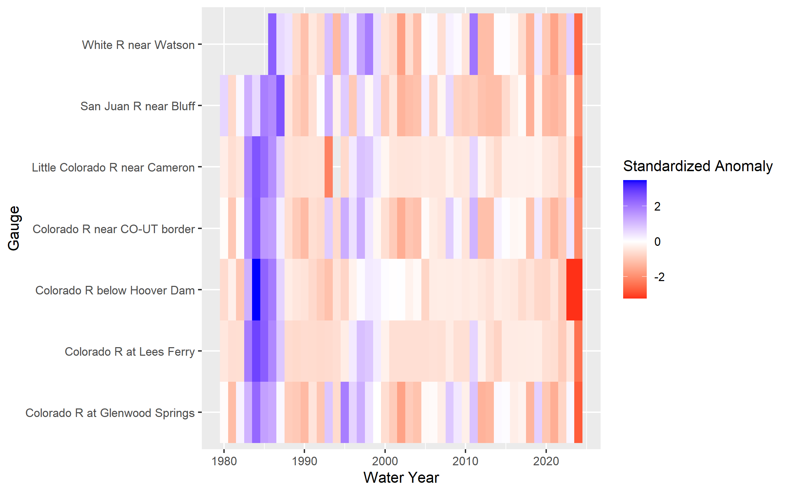
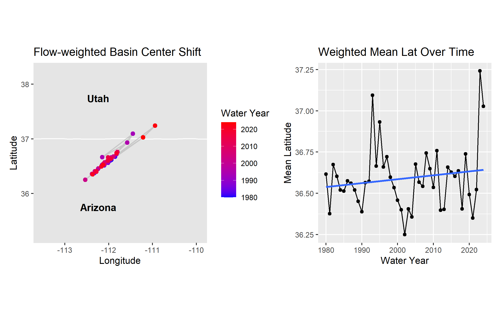
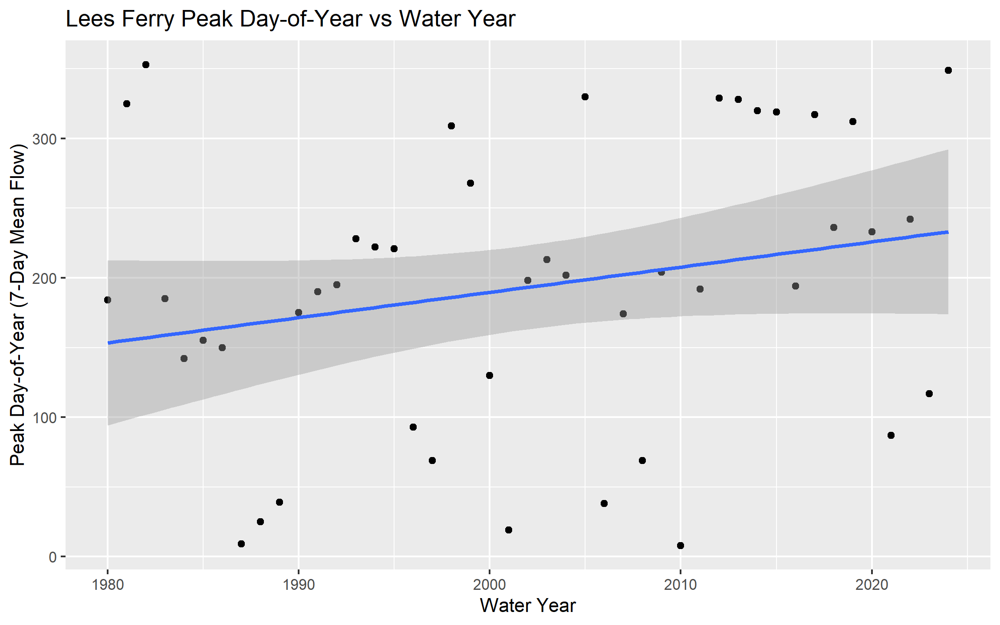
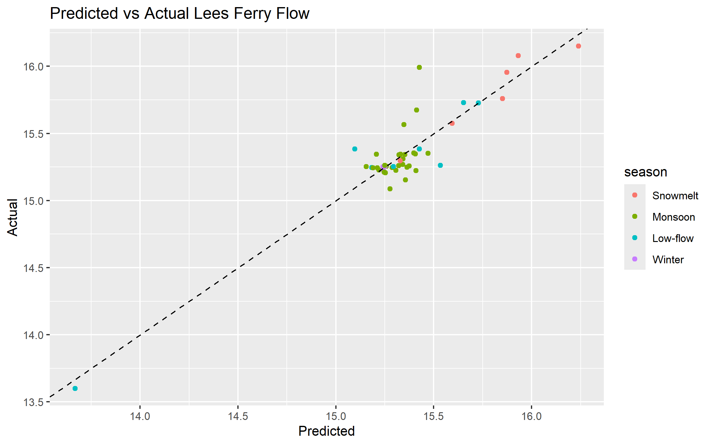
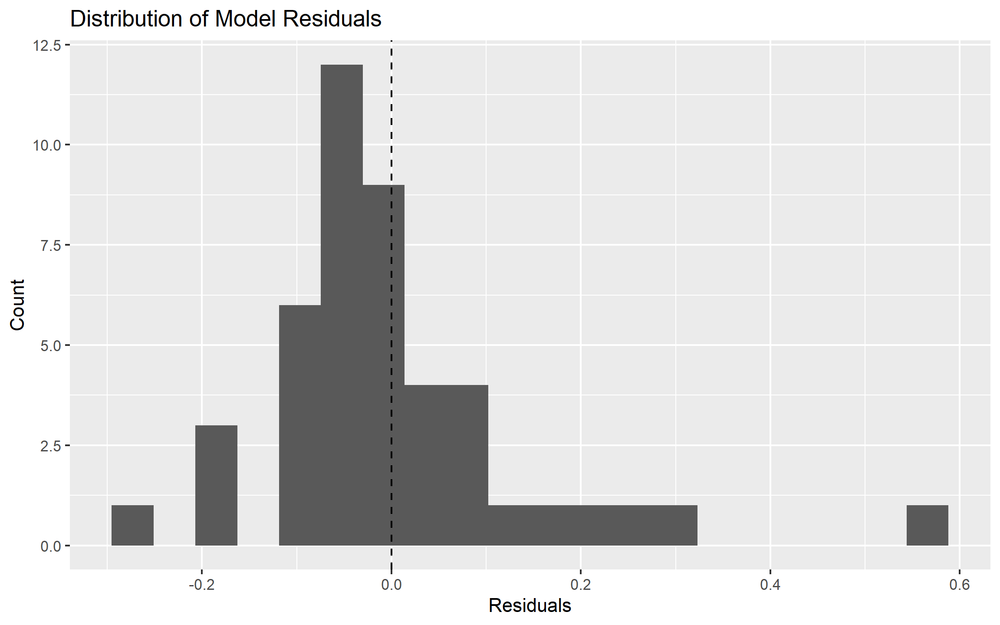

Code
if (!requireNamespace("pacman", quietly = TRUE)) install.packages("pacman")
pacman::p_load(
tidyverse,
dataRetrieval,
zoo,
patchwork,
flextable,
lubridate,
broom
)Exploring Streamflow Across the Colorado River Basin
In January 2023, the federal government announced the first-ever Tier 3 shortage on the Colorado River — triggering mandatory cuts to Arizona, Nevada, and Mexico. Those cuts were calculated from streamflow records like the ones you are about to pull.
The Colorado River Basin supplies drinking water to 40 million people across 7 US states, irrigates 5 million acres of farmland, and is governed by one of the oldest and most contested water rights agreements in American history — the Colorado River Compact of 1922. Understanding how streamflow varies across this system is not an academic exercise. It is the daily work of water managers, federal agencies, tribal water rights holders, and scientists navigating a river under compounding stress from drought, overallocation, and climate change.
In this lab you will work with real streamflow records pulled directly from the USGS National Water Information System (NWIS) — the same federal system water managers query every morning. You will build a complete analytical pipeline: from raw API call to normalized comparisons, threshold detection, basin-wide trend visualization, and a predictive model of the Compact’s key accounting point.
if (!requireNamespace("pacman", quietly = TRUE)) install.packages("pacman")
pacman::p_load(
tidyverse,
dataRetrieval,
zoo,
patchwork,
flextable,
lubridate,
broom
)We will use the dataRetrieval package — developed and maintained by the USGS — to pull 44 years of daily mean discharge from 7 long-record gauges spanning the Colorado River’s main stem and major tributaries.
The USGS parameter code for discharge is 00060 (cubic feet per second). The statistic code 00003 is the daily mean value. Under the hood, dataRetrieval constructs and queries the same REST API URL we explored in lecture:
https://waterservices.usgs.gov/nwis/dv/?sites=09380000¶meterCd=00060&statCd=00003gauges <- tribble(
~site_no, ~name, ~state,
"09380000", "Colorado R at Lees Ferry", "AZ",
"09163500", "Colorado R near CO-UT border", "CO",
"09085000", "Colorado R at Glenwood Springs","CO",
"09306500", "White R near Watson", "UT",
"09379500", "San Juan R near Bluff", "UT",
"09402500", "Little Colorado R near Cameron","AZ",
"09423000", "Colorado R below Hoover Dam", "NV"
)
raw <- readNWISdv(
siteNumbers = gauges$site_no,
parameterCd = "00060",
startDate = "1980-01-01",
endDate = "2023-12-31"
) |>
renameNWISColumns() |> # renames X_00060_00003 → Flow
left_join(gauges, by = "site_no") |>
select(site_no, name, state, Date, Flow)
glimpse(raw)Rows: 109,428
Columns: 5
$ site_no <chr> "09085000", "09085000", "09085000", "09085000", "09085000", "0…
$ name <chr> "Colorado R at Glenwood Springs", "Colorado R at Glenwood Spri…
$ state <chr> "CO", "CO", "CO", "CO", "CO", "CO", "CO", "CO", "CO", "CO", "C…
$ Date <date> 1980-01-01, 1980-01-02, 1980-01-03, 1980-01-04, 1980-01-05, 1…
$ Flow <dbl> 620, 605, 582, 582, 575, 590, 582, 582, 582, 590, 560, 598, 59…:::
You are a water resources analyst. Each morning you deliver a reproducible snapshot of current conditions to Colorado River Compact stakeholders. The analysis must be re-runnable on any date with a single change — that requires building it around parameter objects rather than hardcoded values.
a. Create a my.date parameter object set to the last day of water year 2023 (September 30, 2023). Ensure it is stored as a proper Date object, not a character string. :::
my.date <- as.Date("2023-09-30")
class(my.date)[1] "Date"b. Compute the day-over-day change in discharge for each gauge — how much flow rose or fell compared to the previous day. Store this as a new column called flow_delta. This tells you whether conditions are improving or deteriorating, which is often more actionable than the raw level alone.
flow_delta <- raw |>
group_by(site_no) |>
arrange(Date, .by_group = TRUE) |> # make sure chronological order
mutate(flow_delta = Flow - lag(Flow)) |>
ungroup()c. Filter to my.date and produce two formatted tables using flextable:
:::
mydate_delta <- flow_delta |>
filter(Date == my.date) # Only keep rows for the date
#Table 1: current flow
top_flow <- mydate_delta |>
slice_max(order_by = Flow, n = 5) |> #5 rows with highest flow
mutate(Flow = round(Flow, 2)) |> # Round
flextable() |>
set_header_labels(
site_no = "Site Number",
name = "Gauge Name",
state = "State",
date = "Date",
flow = "Flow (cfs)"
) |>
set_caption("Top 5 Gauges by Current Flow") |>
autofit()
#View table
top_flowSite Number | Gauge Name | State | Date | Flow | flow_delta |
|---|---|---|---|---|---|
09402500 | Little Colorado R near Cameron | AZ | 2023-09-30 | 6,950 | -20 |
09380000 | Colorado R at Lees Ferry | AZ | 2023-09-30 | 6,570 | -10 |
09163500 | Colorado R near CO-UT border | CO | 2023-09-30 | 3,470 | -50 |
09379500 | San Juan R near Bluff | UT | 2023-09-30 | 680 | -143 |
09085000 | Colorado R at Glenwood Springs | CO | 2023-09-30 | 533 | 8 |
#Table 2day-over-day increase
top_increase <- mydate_delta |>
slice_max(order_by = flow_delta, n = 5) |> # Select 5 rows with largest flow_delta
select(site_no, name, state, Date, flow_delta) |>
mutate(flow_delta = round(flow_delta, 2)) |>
flextable() |>
set_header_labels(
site_no = "Site Number",
name = "Gauge Name",
state = "State",
date = "Date",
flow_delta = "Delta Flow (cfs)"
) |>
set_caption("Top 5 Gauges by Day-over-Day Flow Increase") |>
autofit()
top_increaseSite Number | Gauge Name | State | Date | Delta Flow (cfs) |
|---|---|---|---|---|
09085000 | Colorado R at Glenwood Springs | CO | 2023-09-30 | 8 |
09306500 | White R near Watson | UT | 2023-09-30 | -7 |
09380000 | Colorado R at Lees Ferry | AZ | 2023-09-30 | -10 |
09402500 | Little Colorado R near Cameron | AZ | 2023-09-30 | -20 |
09163500 | Colorado R near CO-UT border | CO | 2023-09-30 | -50 |
Raw discharge numbers alone don’t tell the full story. Lees Ferry always carries more water than the San Juan at Bluff — but that is largely because it drains over 111,000 square miles versus the San Juan’s ~23,000. To compare these sites meaningfully, we need each gauge’s drainage area. That information lives in a separate table and must be joined in.
This is the core relational data problem: observations in one table, attributes in another, connected through a shared key. It is also one of the most error-prone operations in data science — not because the syntax is hard, but because bad joins fail silently.
a. Pull site metadata for all 7 gauges. Before joining, verify that site_no is actually unique in site_meta — a duplicated key will silently inflate your row count.
site_meta <- readNWISsite(gauges$site_no) |>
select(
site_no,
drain_area_va, # drainage area in square miles
huc_cd, # 8-digit HUC watershed code
dec_lat_va, # latitude
dec_long_va # longitude
)
# Is site_no actually unique? If any row shows n > 1, the join will duplicate rows
site_meta |> count(site_no) |> filter(n > 1)[1] site_no n
<0 rows> (or 0-length row.names)b. Join site_meta to your flow data using site_no as the key. Use the join type that keeps all flow records regardless of whether metadata is available.
flow_with_meta <- flow_delta |>
left_join(site_meta, by = "site_no") # keep all flow_delta rows, add metadata where available
#Verify
nrow(flow_with_meta) == nrow(flow_delta) # TRUE if row count unchanged[1] TRUEsum(is.na(flow_with_meta$drain_area_va)) == 0 # TRUE if no unexpected NAs[1] TRUE#Spot-check✓c. Verify the join (see above) — this step is not optional.
nrow(result) == nrow(left_table) — row count unchanged ✓sum(is.na(new_column)) == 0 — no unexpected NAs ✓Lees Ferry’s high discharge reflects its enormous watershed, not necessarily more intense rainfall or runoff. To compare runoff intensity across sites with different drainage areas, we normalize by expressing flow per unit area: cfs per square mile.
a. Add a flow_per_sqmi column to your data.frame.
flow_per_sqmi <- flow_with_meta |>
mutate(flow_per_sqmi = round(Flow / drain_area_va, 2))b. On my.date, build a flextable showing both raw and normalized rankings side by side for all 7 gauges. Include columns for gauge name, raw discharge (cfs), drainage area (mi²), normalized flow (cfs/mi²), raw rank, and normalized rank. Sort by raw rank.
#Table: Raw vs normalized flows
flow_ranking <- flow_per_sqmi |>
filter(Date == my.date) |>
arrange(desc(Flow)) |> # sort by raw flow
mutate(
raw_rank = 1:n(), # position in table as raw rank
normalized_rank = rank(-flow_per_sqmi, ties.method = "first") # normalized rank
) |>
select(name, Flow, drain_area_va, flow_per_sqmi, raw_rank, normalized_rank) |>
mutate(
Flow = round(Flow, 2),
flow_per_sqmi = round(flow_per_sqmi, 2)
) |>
flextable() |>
set_header_labels(
name = "Gauge Name",
Flow = "Raw Flow (cfs)",
drain_area_va = "Drainage Area (mi²)",
flow_per_sqmi = "Normalized Flow (cfs/mi²)",
raw_rank = "Raw Rank",
normalized_rank = "Normalized Rank"
) |>
set_caption("Raw vs Normalized Flow Rankings for 7 Gauges on September 30th, 2023") |>
autofit()
flow_rankingGauge Name | Raw Flow (cfs) | Drainage Area (mi²) | Normalized Flow (cfs/mi²) | Raw Rank | Normalized Rank |
|---|---|---|---|---|---|
Little Colorado R near Cameron | 6,950 | 141,600 | 0.05 | 1 | 5 |
Colorado R at Lees Ferry | 6,570 | 111,800 | 0.06 | 2 | 4 |
Colorado R near CO-UT border | 3,470 | 17,849 | 0.19 | 3 | 2 |
San Juan R near Bluff | 680 | 23,000 | 0.03 | 4 | 6 |
Colorado R at Glenwood Springs | 533 | 1,453 | 0.37 | 5 | 1 |
White R near Watson | 329 | 4,020 | 0.08 | 6 | 3 |
Colorado R below Hoover Dam | 173,300 | 7 | 7 |
c. Answer in 2–3 sentences: (1) do the raw and normalized rankings differ, and if so, which gauge changes most dramatically? (2) Why does per-area normalization matter for comparing gauges in the Colorado Basin? (3) Name one analysis where you would use raw discharge and one where you would use normalized discharge.
#Interpertation (1) Yes, these ranking differ. for example, Gauges at “Little Colorado R near Cameron” and “Colorado R at Glenwood Springs” changed the most moving 4 ranks each. (2) Without normalization, the larger basins would always naturally have higher flows due to their size, but using normalized makes it possible to compare locations equally regardless of size differences. (3) Raw discharge can be used when quantity matters, for example, when assessing flooding; in contract, normalized discharge would be used for equal comparisons such as which location has higher flow intensity. > …
Drought managers don’t just watch absolute flow levels — they watch how current conditions compare to historical norms. The standard operational metric is the 7Q10: the lowest 7-day average flow expected to occur once in 10 years. We’ll use a related approach: flag when the 7-day rolling mean falls below the historical 10th percentile.
a. For each gauge, compute the 7-day rolling mean of daily discharge. Use zoo::rollmean() with fill = NA and align = "right" so each value represents the average of the current and 6 preceding days. If you havent see this function before, check out the documentation (?rollmean) and examples to understand how it works.
flow_rolling <- raw |>
group_by(site_no) |>
arrange(Date, .by_group = TRUE) |>
mutate(
flow_7day_mean = rollmean(
Flow,
k = 7, #7 days
fill = NA, # Fill the first 6 values with NA (not enough prior data)
align = "right" #Each value = mean of current day + previous 6 days
)
) |>
ungroup()b. Define a low-flow threshold for each gauge as the 10th percentile of its historical discharge during 1980–2010. A flow that is critically low for Lees Ferry might be above average for the Little Colorado — thresholds must be site-specific.
low_flow_thresholds <- raw |>
mutate(Date = as.Date(Date)) |>
filter(Date >= as.Date("1980-01-01") & Date <= as.Date("2010-12-31")) |> # Restrict dataset to the historical period
group_by(site_no) |>
summarise(
low_flow_threshold = quantile(
Flow,
probs = 0.10, #10th percentile defines "low flow"
na.rm = TRUE)) |>
ungroup()c. Add a logical column below_threshold that is TRUE when the 7-day rolling mean is below the gauge’s 10th percentile threshold.
rolling_with_threshold <- flow_rolling |>
left_join(low_flow_thresholds, by = "site_no") |>
mutate(below_threshold = flow_7day_mean < low_flow_threshold)d. For Lees Ferry (site 09380000) — the Compact’s primary accounting point — plot the 7-day rolling mean from 2000–2023 using ggplot. Shade periods below threshold in red and add a dashed horizontal reference line at the threshold.
ggplot(data = rolling_with_threshold %>%
filter(
site_no == "09380000",
Date >= as.Date("2000-01-01"),
Date <= as.Date("2023-12-31")),
aes(x = Date, y = flow_7day_mean)) +
geom_line(color = "black") +
geom_ribbon(data = ~ filter(.x, below_threshold == TRUE),
aes(ymin = 0, ymax = flow_7day_mean), fill = "red", alpha = 0.3) +
geom_hline(
aes(yintercept = low_flow_threshold), linetype = "dashed") +
labs(
title = "7-Day Rolling Mean Flow at Lees Ferry (2000–2023)",
x = "Date",
y = "Flow (cfs)") +
theme_light()
e. How many days per year, on average, did Lees Ferry fall below its low-flow threshold in 2000–2010 vs. 2011–2023? Produce a small summary table and answer in 2–3 sentences: (1) did below-threshold days increase or decrease? (2) Is this a shift in isolated dry years or a persistent baseline change? (3) What does this imply for Compact delivery obligations?
#Interpertation (1) According to the table below, the average number of days has increased over the two time periods. (2) Given that this is the average changing (not just the raw number of days), it indicates this is a persistent baseline change. (3) The increase in low flows will mean that there will be shortages or cutbacks in water supply/use for the states involved.
#Average number of days
lees_summary <- rolling_with_threshold |>
filter(site_no=="09380000") |>
mutate(year= year(Date), period=ifelse(year<=2010, "2000–2010", "2011–2023")) |> #Separate years
group_by(period,year) |>
summarise(low_flow_days= sum(below_threshold, na.rm=TRUE),.groups="drop") |>
group_by(period) |>
summarise(avg_days= sum(low_flow_days)/n_distinct(year)) #Calc average
lees_summary# A tibble: 2 × 2
period avg_days
<chr> <dbl>
1 2000–2010 23.5
2 2011–2023 27.5…
Calendar years are a poor fit for western US hydrology. The water year (October 1 – September 30) captures the full snowmelt cycle: snowpack accumulates through winter, melts in spring, and by September the basin has recharged or drawn down for the year. Water year 2023 = October 1, 2022 through September 30, 2023.
a. Add water_year and month columns to your dataset. The water year is the calendar year of the ending September 30 — months October through December belong to the next water year.
rolling_with_threshold <- rolling_with_threshold |>
mutate(month= month(Date), #extract month from Date column
water_year= if_else(month>=10,year(Date)+1,year(Date))) #make oct,nov,dec part of following yearb. For each gauge and water year, compute: total annual discharge, peak daily discharge, and number of days below the low-flow threshold.
discharge_threshold <- rolling_with_threshold |>
group_by(site_no,water_year)|>
summarise(
total_annual_discharge= sum(Flow,na.rm=TRUE),
peak_daily_discharge= max(Flow,na.rm=TRUE),
low_flow_days= sum(below_threshold,na.rm=TRUE),
.groups="drop") #remove groupings
discharge_threshold# A tibble: 308 × 5
site_no water_year total_annual_discharge peak_daily_discharge low_flow_days
<chr> <dbl> <dbl> <dbl> <int>
1 09085000 1980 432890 7170 0
2 09085000 1981 271835 4110 103
3 09085000 1982 469712 5500 0
4 09085000 1983 603893 11200 11
5 09085000 1984 765741 9510 0
6 09085000 1985 644976 9690 0
7 09085000 1986 624342 7020 0
8 09085000 1987 460126 5720 0
9 09085000 1988 314527 4090 2
10 09085000 1989 303507 2920 47
# ℹ 298 more rowsc. Plot total annual discharge at Lees Ferry by water year (1980–2023) as a bar chart. Color bars above the long-term median blue and bars below it red. Add a dashed horizontal reference line at the median.
ggplot(discharge_threshold %>%
filter(site_no=="09380000") %>%
mutate(med= median(total_annual_discharge),color=if_else(total_annual_discharge>=med,"blue","red")),
aes(x=water_year, y=total_annual_discharge, fill=color)) +
geom_col() +
geom_hline(aes(yintercept=median(total_annual_discharge)),linetype="dashed") +
scale_fill_identity() +
labs(x="Water Year",y="Total Annual Discharge")
In 2–3 sentences:(1) describe the direction and approximate timing of any structural shift in the record, (2)identify one year that stands out as an exception to the dominant pattern and what you know about its cause and (3)explain what this pattern means for Compact water accounting.
#Interpertation (1) Structurally, it appears that approximately half of the years are below the median (which makes sense given how median was calculated), and it appears that the years above the median are lower on average in later years, meaning the blue columns (while still above the line) are closer to the line in general. (2) The year 1984 stands out as the highest bar (especially compared to later years), and this is likely due above average snow melt; on the other hand, 2024 is exceptionally low, due to October, November, and December of 2023 being the only months contributing to that year. (3) Once again, the lower annual discharge will likely mean less snow melt and discharge in general, meaning states will face drought conditions or water use cutbacks. > …
A single gauge tells you about one location. To understand whether drought is consistent across the entire basin — or whether some tributaries are diverging from the main stem — you need to compare all gauges simultaneously on the same scale.
Raw discharge can’t serve this purpose: a large-watershed gauge will always dominate. The solution is a standardized anomaly — each year’s flow expressed as standard deviations above or below the site’s own baseline mean:
\[\text{anomaly} = \frac{\bar{Q}_{year} - \bar{Q}_{baseline}}{\sigma_{baseline}}\]
where baseline = 1980–2010. An anomaly of –2 means “two standard deviations below normal for this gauge” — directly comparable to the same metric at any other gauge.
a. Compute the 1980–2010 baseline mean and SD per gauge. Join those stats back to the full annual data and compute the standardized anomaly for every gauge-year combination.
#Baseline (1980–2010) mean + SD
baseline_stats <- discharge_threshold |>
filter(water_year >= 1980, water_year <= 2010) |>
group_by(site_no) |>
summarise(
baseline_mean = mean(total_annual_discharge, na.rm = TRUE),
baseline_sd = sd(total_annual_discharge, na.rm = TRUE),
.groups = "drop")
#Join to annual data + compute anomaly
annual_anomaly <- discharge_threshold |>
left_join(baseline_stats, by = "site_no") |>
mutate(
standardized_anomaly =
(total_annual_discharge - baseline_mean) / baseline_sd)
#Verify
nrow(annual_anomaly) #308 observations = 1 mean and sd per site for every year[1] 308sum(is.na(annual_anomaly$standardized_anomaly))[1] 0b. Visualize as a heatmap: water year on x, gauge name on y, fill = standardized anomaly. Use a diverging color scale centered at zero (blue = above average, red = below average).
ggplot(annual_anomaly %>%
left_join(distinct(flow_with_meta, site_no, name), by = "site_no"),
aes(water_year, name, fill = standardized_anomaly)) +
geom_tile() +
scale_fill_gradient2(
low = "red", mid = "white", high = "blue", midpoint = 0,
oob = scales::squish
) +
labs(x = "Water Year", y = "Gauge", fill = "Standardized Anomaly")
#My sd reference
#0 = exactly average (baseline mean)
#+1 = 1 SD above average (unusually wet)
#−1 = 1 SD below average (dry)
#±2 = strong anomaly
#±3 = extreme anomaly (rare but valid)c. In 3–4 sentences: (1) describe whether the post-2000 drought signal appears across all gauges or only some. (2) identify two specific years that appear as basin-wide anomalies — one dry, one wet — and name the climate event that caused each. (3) explain what simultaneous basin-wide anomalies tell you that a single-gauge record cannot.
#Interpertation (1) Over the next few years after 2000, every gauge appears to show evidence of drought by transitioning from light blue (positive) to white (0) or from light red to a darker shade. (2) In 1984 and 1986, every basin had very above average water likely due to excessive snow melt. On the other hand, 2024 is exceptionally dry across all gauges, but this is likely due to that year having incomplete data in this analysis. (3) This can reveal wider weather and climate patterns, for example, a single gauge may just be in the right spot to get a lot of snow, but a comparison over the whole basin can show if a large area experienced consistently high or low water levels.
…
You have been asked to understand how the geographic center of streamflow has shifted over time. If drought has disproportionately reduced flow in the southern tributaries, the flow-weighted center of the basin should drift north — proportionally more flow is coming from northern headwater gauges. In exceptional snowmelt years it should shift back.
We measure this with the flow-weighted mean position: each gauge’s coordinates are weighted by its fraction of total annual basin flow.
\[\bar{X}_{year} = \frac{\sum (lon_i \times Q_i)}{\sum Q_i} \qquad \bar{Y}_{year} = \frac{\sum (lat_i \times Q_i)}{\sum Q_i}\]
a. Join gauge coordinates (dec_lat_va, dec_long_va) from site_meta to your annual summary. Compute the flow-weighted mean latitude and longitude for each water year.
flow_center <- discharge_threshold |>
left_join(
select(site_meta, site_no, drain_area_va, dec_lat_va, dec_long_va),
by = "site_no") |>
group_by(water_year) |>
mutate(
mean_lat =
sum(total_annual_discharge * dec_lat_va, na.rm = TRUE) /
sum(total_annual_discharge, na.rm = TRUE),
mean_long =
sum(total_annual_discharge * dec_long_va, na.rm = TRUE) /
sum(total_annual_discharge, na.rm = TRUE)) |>
ungroup()
#Verify
nrow(flow_center) == nrow(discharge_threshold)[1] TRUEsum(is.na(flow_center$dec_lat_va)) == 0 [1] TRUEsum(is.na(flow_center$dec_long_va)) == 0[1] TRUEb. Create a two-panel figure using patchwork:
Hint: draw a western-US polygon basemap and overlay the annual weighted centers as a colored path and points; beside it, plot weighted latitude over time with a linear trend. Use a diverging color gradient for year progression and patchwork to combine panels.
If you haven’t seen patchwork before, it allows you to combine multiple ggplots into a single figure with simple syntax: plot1 + plot2 places them side by side; plot1 / plot2 stacks them vertically assuming the package is loaded.
#Western US
us_map <- ggplot2::map_data("state") #from tip
west_map <- us_map |>
dplyr::filter(region %in% c(
"california","oregon","washington","idaho","nevada",
"utah","arizona","new mexico","colorado","wyoming","montana"))
#Need state labels?
xlim <- range(flow_center$mean_long, na.rm = TRUE) + c(-1, 1)
ylim <- range(flow_center$mean_lat, na.rm = TRUE) + c(-1, 1)
label_positions <- data.frame(
region = c("Utah", "Arizona"),
lon = c(mean(xlim) - 0.5, mean(xlim) - 0.5),
lat = c(max(ylim) - 0.5, min(ylim) + 0.5))
#Left map with center path
p_map <- ggplot() +
geom_polygon(
data = west_map,
aes(x = long, y = lat, group = group),
fill = "grey90", color = "white") +
geom_text(
data = label_positions,
aes(lon, lat, label = region),
size = 4, fontface = "bold") +
geom_path(
data = flow_center,
aes(mean_long, mean_lat), color = "grey70", linewidth = 0.6, alpha = 0.6) +
geom_point(
data = flow_center,
aes(mean_long, mean_lat, color = water_year),
size = 2) +
scale_color_gradient(
low = "blue", high = "red") +
coord_quickmap(
xlim = range(flow_center$mean_long, na.rm = TRUE) + c(-1, 1),
ylim = range(flow_center$mean_lat, na.rm = TRUE) + c(-1, 1)) +
labs(title = "Flow-weighted Basin Center Shift",
x = "Longitude", y = "Latitude", color = "Water Year")
#Rightmap with latitude
p_lat <- ggplot(flow_center %>%
distinct(water_year, mean_lat), #see every year once on graph
aes(x = water_year, y = mean_lat)) +
geom_line() +
geom_point() +
geom_smooth(method = "lm", se = FALSE) +
labs(title = "Weighted Mean Lat Over Time",
x = "Water Year", y = "Mean Latitude")
#Combined maps
p_map + p_lat
c. Your latitude time series should show two years where the weighted center spikes dramatically northward. Identify those two years and explain: (1) what climate event caused each spike, (2) what they have in common physically, and (3) what the long-term upward trend in weighted latitude suggests about which part of the basin is becoming proportionally more important to total flow — and why that matters for water managers downstream.
#Interpertation (1) It is likely that drought in southern areas or more snow melt in northern areas occurred in 1993 and 2023 (see code below). (2) According to some quick Google search, the western us received more snow than usual during these years with some states receiving much more than others. (3) Long term trends can indicate some areas will disproportionately experience more drought or more rain, in this case, making the northern basin more important as it receives more water. This will impact communities downstream and managers will have to change the current water supply plan/infrastructure.
#What years spikes north
z <- (flow_center$mean_lat - mean(flow_center$mean_lat, na.rm = TRUE)) /
sd(flow_center$mean_lat, na.rm = TRUE)
unique_years <- flow_center$water_year[order(z, decreasing = TRUE)]
unique_years <- unique(unique_years)
unique_years[1:2][1] 2023 1993…
Annual totals mask important seasonal structure. The Colorado Basin has two distinct runoff pulses: a snowmelt surge in spring (April–June) driven by Rocky Mountain headwater snowpack, and a monsoon pulse in late summer (July–September) driven by convective storms across the Arizona-New Mexico plateau. These seasons respond differently to climate forcing — and under warming, the snowmelt season is arriving earlier.
a. Add a season column using case_when(). Roughly we will define the seasons as follows:
Make season a factor with levels in hydrological order: Snowmelt, Monsoon, Low-flow, Winter.
library(lubridate)
seasonal_summary <- rolling_with_threshold |>
mutate(
month = month(Date),
season = case_when(
month %in% 4:6 ~ "Snowmelt",
month %in% 7:9 ~ "Monsoon",
month %in% 10:12 ~ "Low-flow",
month %in% 1:3 ~ "Winter"),
season = factor(season,
levels = c("Snowmelt", "Monsoon", "Low-flow", "Winter")))
#Check factor order
levels(seasonal_summary$season)[1] "Snowmelt" "Monsoon" "Low-flow" "Winter" b. Group by gauge, water year, and season. Summarize total seasonal discharge and normalized runoff per group.
seasonal_summary <- seasonal_summary |>
left_join(
site_meta |>
select(site_no, drain_area_va), #need drain_area
by = "site_no")
seasonal_summarized <- seasonal_summary |>
group_by(site_no, water_year, season) |>
summarise(
total_seasonal_discharge = sum(Flow, na.rm = TRUE),
normalized_runoff = total_seasonal_discharge / first(drain_area_va),
.groups = "drop")c. For each gauge and water year, identify the date of peak 7-day mean flow and convert it to day-of-year. Plot peak day-of-year vs. water year for Lees Ferry with a linear trend line.
slice_max(roll7, n = 1, with_ties = FALSE) inside a group_by(site_no, water_year) block selects the single highest 7-day mean row per gauge per year. Then lubridate::yday(Date) converts to day-of-year (1–365).
peak_flow <- seasonal_summary |>
group_by(site_no, water_year) |>
slice_max(flow_7day_mean, n = 1, with_ties = FALSE) |>
ungroup() |>
mutate(peak_day = yday(Date))
ggplot(
peak_flow %>% filter(site_no == "09380000"),
aes(x = water_year, y = peak_day)) +
geom_point() +
geom_smooth(method = "lm", se = TRUE) +
labs(
x = "Water Year",
y = "Peak Day-of-Year (7-Day Mean Flow)",
title = "Lees Ferry Peak Day-of-Year vs Water Year")
d. In 2–3 sentences: (1) describe the direction and magnitude of the peak timing trend. (2) is it statistically visible or buried in noise? (3) What would a two-week earlier peak timing mean operationally for reservoir managers trying to capture spring runoff before it passes downstream?
#Interpertation (1) According to the upward trend line, the peaks are happening later in the water year as time goes on, however, this line is not very steep and has a low magnitude. (2) This is not very visable as without the trend line, it would be difficult to spot the upward trend. (3) This would mean manager need to prepare everything further in advance and watch the changing trend to make sure the do not miss the timing. > …
Lees Ferry is the Compact’s accounting point — the location where upper basin states must deliver flow to lower basin states. Predicting annual discharge at Lees Ferry from upstream conditions has direct operational value: managers can begin planning deliveries months before the water arrives.
We’ll build a simple but physically grounded model: can Glenwood Springs (an upper Rocky Mountain gauge) predict Lees Ferry annual flow, and, does that relationship change by season?
a. Build your model dataset through four sequential operations:
annual to Lees Ferry; rename total_flow to lees_flow09085000); rename to glenwood_flow#1 Filter
lees_annual <- discharge_threshold |>
filter(site_no == "09380000") |>
rename(lees_flow = total_annual_discharge)
#2 Join Glenwood
lees_annual <- lees_annual |>
left_join(
discharge_threshold |>
filter(site_no == "09085000") |>
select(water_year, total_annual_discharge) |>
rename(glenwood_flow = total_annual_discharge),
by = "water_year")
lees_annual <- lees_annual |>
select(-site_no)
#3 Find and Join dom season
dominant_season <- seasonal_summarized |>
filter(site_no == "09380000") |>
group_by(water_year) |>
slice_max(total_seasonal_discharge, n = 1, with_ties = FALSE) |>
ungroup() |>
select(water_year, season)
lees_annual <- lees_annual |>
left_join(dominant_season, by = "water_year")
sum(is.na(lees_annual$season)) == 0[1] TRUE#4 Log transform
lees_annual <- lees_annual |>
mutate(
log_lees_flow = log(lees_flow),
log_glenwood_flow = log(glenwood_flow))b. Fit a linear model predicting log_lees from log_glenwood, season, and their interaction, If you haven’t seen linear modeling in R, we will cover it in more detail latter in this course, but, the syntax is straightforward: lm(response ~ predictor1 * predictor2, data = mydata) fits a model with main effects and an interaction term. The interaction (*) allows the relationship between Glenwood and Lees to differ by season while a model without interaction (lm(log_lees ~ log_glenwood + season)) would assume the same Glenwood-Lees relationship in every season.
model <- lm(log_lees_flow ~ log_glenwood_flow * season, data = lees_annual)
summary(model)
Call:
lm(formula = log_lees_flow ~ log_glenwood_flow * season, data = lees_annual)
Residuals:
Min 1Q Median 3Q Max
-0.27318 -0.06674 -0.01845 0.03094 0.56592
Coefficients:
Estimate Std. Error t value Pr(>|t|)
(Intercept) -8.1111 5.2736 -1.538 0.132543
log_glenwood_flow 1.7973 0.3963 4.535 5.87e-05 ***
seasonMonsoon 20.1876 5.4074 3.733 0.000634 ***
seasonLow-flow 12.1775 5.3649 2.270 0.029133 *
seasonWinter 23.0070 8.4577 2.720 0.009880 **
log_glenwood_flow:seasonMonsoon -1.5456 0.4071 -3.797 0.000527 ***
log_glenwood_flow:seasonLow-flow -0.9088 0.4040 -2.249 0.030527 *
log_glenwood_flow:seasonWinter -1.7699 0.6533 -2.709 0.010156 *
---
Signif. codes: 0 '***' 0.001 '**' 0.01 '*' 0.05 '.' 0.1 ' ' 1
Residual standard error: 0.1534 on 37 degrees of freedom
Multiple R-squared: 0.8554, Adjusted R-squared: 0.828
F-statistic: 31.27 on 7 and 37 DF, p-value: 1.116e-13c. In 3–4 sentences: (1) report the R² and state whether the overall model is statistically significant. (2) interpret the log_glenwood coefficient as an elasticity — what does it mean physically that the coefficient is greater than 1? (3) describe what the significant negative interaction terms tell you about the upstream-downstream relationship outside of Snowmelt season.
##Context (for myself)- The first level of factor (decided when creating the season labels) is snowmelt which now acts as a baseline here, with a slope of 1.7973. The other 3 terms are identified by interactions with this baseline and are negative because their slope is lower than the baseline.
#Interpertation (1) According to the summary statistics, R² = 0.8555 meaning th model could predict around 85% of the variation in Lees Ferry, and the p-value (1.116e-13) was very low indicating it was overall statistically significant. (2) This coefficient is 1.7973, indicating that 1% flow from Glenwood is associated with 1.79% flow in Lees Ferry headwaters as the flow accumulated from tributaries. (3) The negative terms mean that, compared to Snowmelt, the other seasons reduce the strength of the upstream–downstream relationship. This means that snowmelt is the season be for predicting downstream flows with upstream data while the other seasons do not influence downstream flows as much.
…
A model that fits well on average can still fail in predictable ways. Two core assumptions of linear regression are: predictions should be unbiased across the full range of fitted values, and residuals should be approximately normally distributed. Let’s check both — and look for the outlier year that the model cannot predict.
a. Use broom::augment() to produce a tidy data frame of predictions and residuals alongside the original data:
aug <- augment(model, data = lees_annual)
glance <- glance(model, data = lees_annual)
tidy <- tidy(model, data = lees_annual)b. Create a predicted vs. actual scatter plot. Add a dashed 1:1 reference line (perfect prediction). Color points by season. Identify any point that sits noticeably off the line.
ggplot(aug, aes(x = .fitted, y = log_lees_flow, color = season)) +
geom_point() +
geom_abline(slope = 1, intercept = 0, linetype = "dashed") +
labs(
x = "Predicted",
y = "Actual",
title = "Predicted vs Actual Lees Ferry Flow")
#Identify outlier
aug |>
mutate(abs_error = abs(log_lees_flow - .fitted)) |>
arrange(desc(abs_error)) |>
select(water_year, season, log_lees_flow, .fitted, abs_error) |>
slice(1)# A tibble: 1 × 5
water_year season log_lees_flow .fitted abs_error
<dbl> <fct> <dbl> <dbl> <dbl>
1 1983 Monsoon 16.0 15.4 0.566c. Plot a histogram of the residuals with a vertical dashed line at zero.
ggplot(aug, aes(x = .resid)) +
geom_histogram(bins = 20) +
geom_vline(xintercept = 0, linetype = "dashed") +
labs(
x = "Residuals",
y = "Count",
title = "Distribution of Model Residuals")
d. In 3–4 sentences: (1) identify the outlier water year visible in your scatter plot. Which year is it and why did the model fail to predict it? (2) Do the residuals appear approximately normal, or is there a tail that concerns you? (3) Name two additional predictors that would most improve this model and explain the physical mechanism behind each.
#Interpertation (1) 1983 is the outlier water year and was not predicted correctly likely due to the area receiving an unusual amount of water in the monsoon season. (2) There is a tail to the right on the histogram. (3) The snowpack, or SWE, could help the model as it indicates the water stored in the basin instead of just flow. Another predictor could be temperature as this will influence snow melt and evaotranspiration. > …